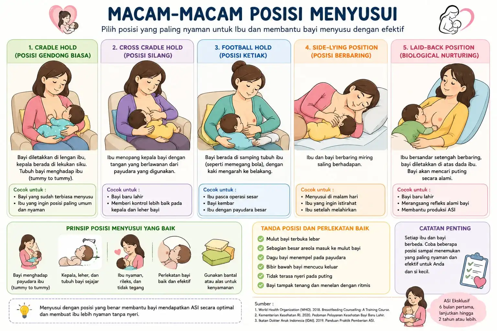
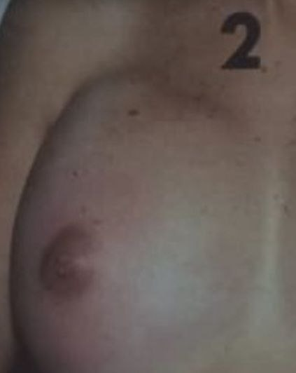
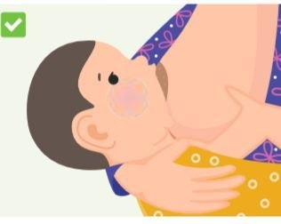

Menyusui
Panduan lengkap untuk ibu menyusui

Teknik Menyusui yang Benar
Teknik menyusui yang benar sangat penting untuk memastikan bayi mendapatkan ASI yang cukup dan mencegah masalah seperti puting lecet.
1 Posisi Menyusui
Cradle Hold
Bayi menghadap dada, kepala di lekukan siku
Football Hold
Bayi diposisikan di samping tubuh ibu
Side-Lying
Ibu dan bayi berbaring menghadap
Laid-back
Ibu berbaring santai dengan bayi di dada
2 Pelekatan yang Benar
-
Bayi membuka mulut lebar dengan areola masuk ke mulut
-
Dagu bayi menyentuh payudara
-
Bibir bayi melekuk ke luar (tidak masuk)
-
Tidak terasa sakit saat bayi menghisap
ASI Eksklusif
ASI eksklusif berarti memberikan hanya ASI saja tanpa air putih, makanan padat, atau formula selama 6 bulan pertama kehidupan bayi.
Manfaat ASI Eksklusif
Antibodi
Perlindungan dari infeksi
Otak
Pertumbuhan optimal
Ikatan
Bonding ibu-bayi
Praktis
Ekonomi & mudah
Tips Memulai ASI Eksklusif
- 1 Inisiasi Menyusu Dini (IMD) dalam 1 jam pertama setelah lahir
- 2 Susui bayi on-demand (saat bayi minta)
- 3 Pastikan bayi mengosongkan satu payudara sebelum pindah
- 4 Jangan gunakan dot atau empeng sebelum menyusui lancar
Mengatasi Puting Lecet
Puting lecet adalah masalah umum yang sering dialami ibu menyusui. Penyebab utamanya adalah pelekatan yang kurang tepat.
Pencegahan
- Pastikan pelekatan bayi benar
- Ganti posisi menyusui agar tekanan merata
- Jangan tarik putting secara paksa
- Oleskan kolostrum setelah menyusui
Penanganan
- Kompres dingin untuk meredakan nyeri
- Oleskan ASI atau lotion lanolin
- Biarkan putting kena udara
- Pompa ASI jika sangat sakit
Memerah dan Menyimpan ASI
Cara Memerah
- 1 Cuci tangan sebelum memerah
- 2 Pijat lembut dengan gerakan melingkar
- 3 Letakkan ibu jari di atas, jari lain di bawah
- 4 Tekan ke dinding dada, remas lembut
Penyimpanan
Suhu Ruangan
4-6 jam
Kulkas
24-48 jam
Freezer
3-6 bulan
Penting: Jangan bekukan ulang ASI yang sudah dicairkan. Panaskan dengan rendam air hangat, bukan microwave.
Masalah Menyusui
Kenali dan atasi masalah umum saat menyusui
A Payudara Bengkak

Gambar 1
Slot untuk Payudara Bengkak
Pengertian
Payudara terlalu penuh karena ASI dan peningkatan cairan jaringan yang mengganggu aliran ASI.
Ciri-ciri
- Payudara terlihat mengkilat, terasa nyeri
- ASI tidak mengalir dengan baik
- Payudara kemerahan
- Demam yang membaik dalam 24 jam
Penyebab
- Produksi ASI yang banyak
- Terlambat menyusui
- Pelekatan bayi kurang baik
- Pengosongan payudara tidak sering
Pencegahan
- Menyusu segera setelah persalinan
- Pastikan pelekatan bayi baik
- Susui bayi on-demand
Perbedaan Payudara Penuh dan Payudara Bengkak
| Ciri | Payudara Penuh | Payudara Bengkak |
|---|---|---|
| Rasa | Terasa panas, berat | Nyeri hebat |
| Kondisi | Keras, padat | Keras, mengkilat, edema |
| Aliran ASI | ASI mengalir | ASI tidak mengalir |
| Demam | Tidak demam | Demam |
| Penanganan | Kompres hangat, menyusui lebih sering | Kompres hangat, pijat, konsultasi dokter |
B Mastitis
Gambar A
Slot untuk Mastitis
Pengertian
Peradangan jaringan payudara yang ditandai dengan nyeri, bengkak, dan panas, sering disertai gejala flu atau demam.
Gejala
- Saluran ASI tersumbat
- Gumpalan lunak di payudara
- Kemerahan kulit
- Stasis ASI (ASI menggenang)
Perbedaan dengan Bengkak
- Mastitis biasanya terjadi di satu payudara
- Ada batas kemerahan yang tegas
- Demam terus-menerus
Penanganan
- Susui sesering mungkin
- Pijat lembut ke arah puting
- Kompres hangat sebelum menyusui
- Istirahat cukup dan minum air yang banyak
C Puting Lecet
Pengertian
Luka atau kulit terkelupas pada puting akibat trauma saat menyusui.
Penyebab
- Teknik perlekatan salah
- Posisi menyusui kurang tepat
Penatalaksanaan
- Perbaiki posisi dan pelekatan bayi
- Oleskan sedikit ASI ke puting setelah menyusui
- Gunakan BH yang menyangga dengan baik
D Perlekatan yang Benar
1 Mulut Bayi Terbuka Lebar
Pastikan bayi membuka mulutnya lebar-lebar seperti akan menguap.
Gambar
Slot Perlekatan Poin 1
2 Dagu Menyentuh Payudara
Dagu bayi harus menyentuh bagian bawah payudara ibu.

Gambar
Slot Perlekatan Poin 2
3 Bibir Melekuk ke Luar
Bibir bayi harus melekuk ke luar, bukan ke dalam.
4 Areola Lebih Banyak di Bawah
Pastikan lebih banyak areola (bagian gelap) di bawah dibanding di atas.
5 Tidak Terasa Nyeri
Jika pelekatan benar, menyusui tidak akan terasa nyeri.